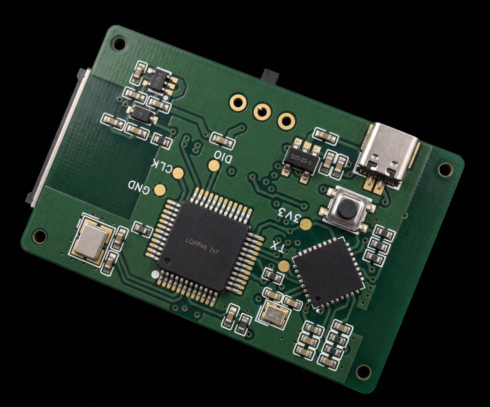
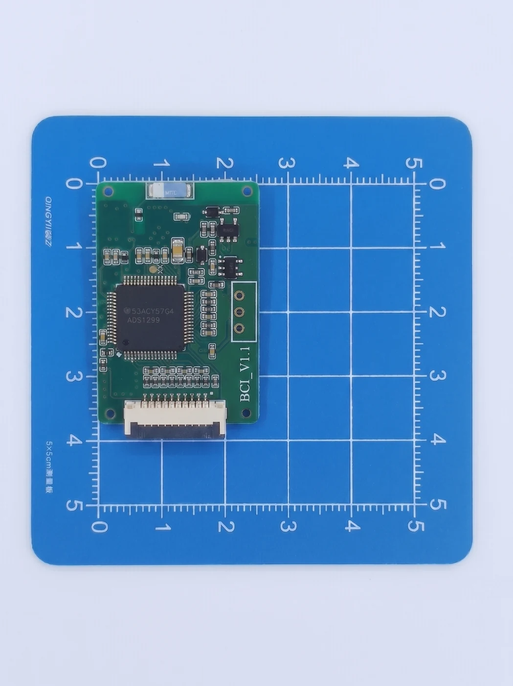

4 通道 BCI
BCI V1.1 板卡外观、现有资料与开发准备，区分产品版本和 ADS1299 参考工程。
产品概览
4 通道 BCI 资料包含 BCI V1.1 板卡的实物照片、正反面 3D 图和软件演示图，适合先了解板卡结构与现有开发资料。正面实物图可识别 ADS1299 器件及 BCI_V1.1 丝印。
本页按资料目录中的“4 通道 BCI”分类整理。具体启用通道、接线定义和固件应与交付板卡版本对应。
板卡外观



板卡与接口识别
| 项目 | 现有资料可确认的内容 | 使用时需对应的资料 |
|---|---|---|
| 板卡标识 | BCI V1.1，来自实物照片和 3D 图 | 实际交付板卡丝印 |
| 采集器件 | 实物正面可识别 ADS1299 | 当前硬件版本的原理图及器件配置 |
| 连接器 | 图片可见排线连接器、USB Type-C 外形接口与按键 | 接口功能、供电电压和连接方向 |
| 调试焊盘 | 3D 背面图标有 CLK、DIO、GND、3V3、TX 等 | 调试接口定义与对应下载器接线 |
| 软件演示 | 演示图展示 EEG、ECG、EMG 波形及数据导出界面 | 交付软件版本和实际启用功能 |
图片用于识别外观，不能替代引脚表。供电范围、尺寸公差、导联映射与通信方式需使用同版本硬件说明确认；演示截图中的瞬时采样值不能作为板卡标称采样率。
资料组成
| 资料 | 内容 |
|---|---|
| 板卡实物照片 | 正面与背面俯视图，可用于检查器件与版本标识 |
| 板卡 3D 图 | 正反面结构、连接器和调试焊盘位置 |
| 软件演示图片 | 波形显示、通道选择及导出界面示例 |
| ADS1299 模块参考资料 | 2025-09-17 资料包，含 STM32F103 工程、WinForms 程序、通信协议、连接示意图、参考原理图和芯片手册 |
参考资料包描述的是 RT-ADS1299 模块与 STM32F103 核心板的组合。其通信文档和代码采用 8 通道数据布局，与本页的 4 通道产品分类需要分别理解。开发前应先确认参考工程与交付板卡之间的对应关系。
ADS1299 参考工程说明
以下条目仅说明随附 STM32 参考工程的实现，供移植时查阅，不作为 4 通道 BCI 的交付参数。
| 项目 | 参考工程中的实现 |
|---|---|
| 处理器平台 | STM32F103，代码使用 STM32 HAL |
| 采样读取 | SPI 读取 ADS1299 的 27 字节数据，转换 8 个通道 |
| 数据表示 | 采样值按 float 表示，代码换算单位为 μV |
| 串口配置 | USART3 配置为 1,000,000 baud、8 数据位、1 停止位、无校验 |
| 指令帧 | 以 AA 开始、BB 结束 |
| 返回帧 | 以 A5 开始、5A 结束 |
| 控制地址 | 0x10 采样参数，0x11 采集控制 |
参考协议说明与部分代码细节存在差异，例如采样参数指令表格中的长度值与通用长度公式不一致。实现解析器时需要按实际固件验证帧长度、校验和通道布局。
本站 8 通道 ESP32-S3 协议文档 描述另一套固件的数据格式，不能直接替代此 STM32 参考协议。
开发准备顺序
- 确认硬件版本。记录板卡丝印、器件型号与交付固件名称，并取得对应的接线图。
- 确认连接定义。核对供电、地线、通信和电极连接器的引脚，不按 3D 图片推断电源方向。
- 匹配软件与协议。核实所用程序对应的是 STM32 参考模块还是本产品交付固件，再设置通信参数。
- 验证数据链路。先以对应固件的测试信号或输入短路模式检查帧解析、通道数量与数值单位。
- 记录实验配置。保留采样率、增益、通道映射与软件版本，便于复现实验。
版本核对清单
当前资料没有完整给出 BCI V1.1 四通道配置的统一规格表。使用前请将下列项目与交付说明逐项对应。
- 四个通道的物理引脚及参考电极、偏置电极定义。
- 允许的供电范围、功耗和供电连接方式。
- 实际主控型号、固件烧录方式和通信接口。
- 可用采样率、增益以及数据包格式。
- 与 Windows 或移动端程序的兼容关系。
资料更新后，可将同版本原理图、接线图和固件说明补充到此页。8 通道产品的具体使用流程可另见 8 通道 BCI。
本页资料依据
- 4通道BCI/正面俯视图.jpg
- 4通道BCI/背面俯视图.jpg
- 4通道BCI/3D正面.jpg
- 4通道BCI/3D反面.jpg
- 4通道BCI/5.png
- 4通道BCI/ADS+STM+ESP32/ADS1299脑电采集模块.zip（内含 20250917 通信协议与 STM32 参考工程）